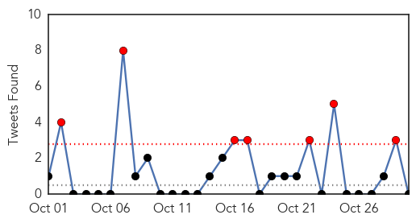
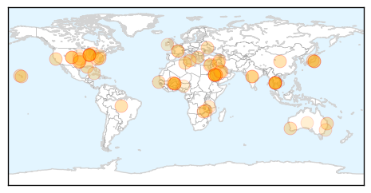
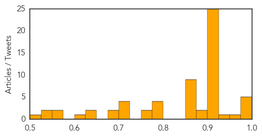
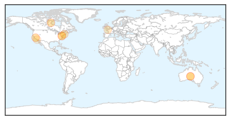

Unknown
30-Day Web Trend
0 alerts, 0 warnings

30-Day Twitter Trend
7 alerts, 0 warnings

Article Locations
Article Confidences
Top Articles:
- 0.996
- Saudi Arabia finds six new MERS cases as outbreak growsHealthcare
- 0.996
- Mers: Saudi Arabia discovers six new cases
- 0.995
- Saudi Arabia finds six new MERS cases as outbreak grows
- 0.995
- Six new MERS cases in Saudi Arabia
- 0.994
- Saudi Arabia finds six new Mers cases as outbreak grows
- 0.963
- Health officials: Oklahomans should be vaccinated for flu
- 0.940
- Health Ministry official denies spread of typhoid in Dalga village
- 0.917
- Chicago Tribune
- 0.917
- Chicago Tribune
- 0.917
- Chicago Tribune
- 0.917
- Chicago Tribune
- 0.917
- Chicago Tribune
- 0.917
- Chicago Tribune
- 0.917
- Chicago Tribune
- 0.917
- Chicago Tribune
- 0.917
- Chicago Tribune
- 0.917
- Chicago Tribune
- 0.917
- Chicago Tribune
- 0.917
- Chicago Tribune
- 0.917
- Chicago Tribune
- 0.917
- Chicago Tribune
- 0.917
- Chicago Tribune
- 0.917
- Chicago Tribune
- 0.917
- Chicago Tribune
- 0.917
- Chicago Tribune
- 0.917
- Chicago Tribune
- 0.910
- The world windows to Thailand
- 0.910
- The world windows to Thailand
- 0.910
- The world windows to Thailand
- 0.910
- The world windows to Thailand
- 0.904
- Manufacturing issues restrict availability of flu vaccine - Columbia Daily Tribune
- 0.900
- Cancer fear grips Greater Noida villages
- 0.882
- The Clermont Sun First case of chronic wasting disease confirmed in Ohio on private preserve
- 0.878
- Child critical with meningococcal disease
- 0.866
- 5 facts you need to know about statelessness
- 0.866
- THAILAND PRESS-Yingluck impeachment proceedings in 25 days, says NLA vice-president
- 0.866
- Burkina army chief announces creation of transitional government
- 0.866
- Germany denies report of further support for Greece after end of bailout
- 0.866
- U.S. focuses on Islamic State targets near Kobani, Syria -U.S. Central Command
- 0.866
- Security forces fire on protesters near Burkina presidential palace -sources
- 0.866
- Putin's spokesman casts doubt on Crimea report, says never heard of source
- 0.866
- Smoke rises from the lava flow from Mt. Kilauea as it inches closer to the village of Pahoa, Hawaii
- 0.851
- Leprosy still occurs in US, CDC reports
- 0.794
- After many delays, first group of Iraqi peshmerga enter Kobane
- 0.794
- 'Right time' to recognise Palestinian state, Swedish FM tells FRANCE 24
- 0.794
- Burkina Faso’s army chief announces creation of interim government
- 0.794
- Blaise Compaoré, the African peacemaker who faced rebellion at home
- 0.771
- Take your shot at winning an iPad this flu season
- 0.766
- Qiagen to support implementation of new WHO guidelines to prevent latent TB infection
- 0.709
- Urgently needed in dist hospital: ICU, more docs
Showing top 50 articles...
Top Tweets:
- 0.682
- KSA reports +3 MERS cases & 3 deaths of previously reported cases. All 3 new cases may have caught it in hospital. http://t.co/qZjfa69AF0
- 0.654
- Don't let the flu catch you by surprise. Plan to get your annual flu vaccine early: http://t.co/Zxb5tmPcbZ
- 0.508
- RT: Why get flu vaccine every year? Protective antibodies decrease over the yr, & the virus can change over time http://t.co/V…
Meningitis
30-Day Web Trend
2 alerts, 4 warnings

30-Day Twitter Trend
0 alerts, 0 warnings

Article Locations
Article Confidences

Top Articles:
- 0.987
- First FDA-approved vaccine for subtype B Meningococcal disease
- 0.973
- FDA Approves Vaccine to Block Meningitis Strain After Use at Princeton University
- 0.967
- New Meningitis Vaccine Gets Federal Approval
- 0.773
- East Lyme mother of student with viral meningitis calms fears
- 0.744
- FDA approves vaccine to block meningitis strain
- 0.734
- University of Maryland confirms cases of viral meningitis
- 0.669
- FDA Approves Meningitis B Vaccine
- 0.637
- The HPV Vaccine's Power to Prevent Cancer
- 0.510
- Palomar College Student With B-Strain Meningitis Out Of Hospital
Top Tweets:
-
No tweets found for Oct 30, 2014